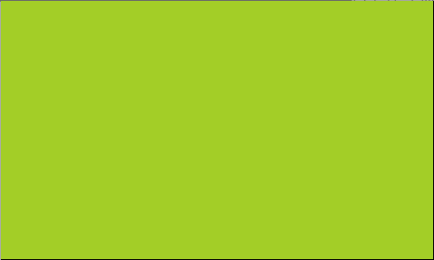
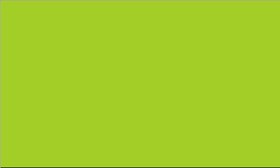

You don't use direction words like LEFT or ACTION with the mouse system. Instead, before the turn begins, the game creates the assigned object on the tile you clicked or dragged into. You can define these objects in the prelude, see the full list of flags here.
Let's say you have an object called TREE that you want to create on a clicked tile. In the prelude, add: Editmouse_left TREEWhere "TREE" is the name of the object you want to spawn upon mouse click. Now start a level, click a tile, and a tree pops up! This works even in games that don't have any rules.
Once you add any of the mouse prelude flags, then menus will also automatically support mouse input. Even the level select will work!
mouse_left CLICK Edit[Click no Tree] -> [Tree]
[Click Tree] -> []Now you can click to plant a tree, and then click it again to remove it.
Do note objects created by mouse input are just normal objects! They need to be assigned to a layer, and they won't be cleared automatically after the turn ends. So make sure you add a rule to remove these temporary objects, if you don't need them any more. For example, in this program we could add [Click] -> [] as the last rule.
If you click and hold your mouse button down and move across the screen, you can follow it with mouse_drag (or mouse_rdrag for the right mouse button).
Consider the following scenario. On one frame, I press the mouse button into this position. Then next frame, because of a lag spike or a super sensitive mouse, the cursor instantly jumps three tiles to the right. At first glance, you might expect that the only detected inputs would be the press on the original tile, and a drag on the current tile.
But in these cases, PuzzleClick will attempt to fire a drag event for each cell that has been dragged through. In other words, a drag object will always appear orthogonally adjacent to the last previous drag object (or pressed in case of the first drag event). However, it will fire a lot of turns quickly, which might clutter the undo stack (there's a solution, see below), or impact performance in complex games.
For example, here's a way to create a CURSOR object that appears on the tile of the previous drag, then moves towards the tile of the current drag:
Edit(Whenever mouse is clicked, create cursor at that position)
[MouseClick] [Cursor] -> [MouseClick] []
[MouseClick] [DragTarget] -> [MouseClick] []
[MouseClick] -> [Cursor DragTarget]
(When mouse is dragged, actually add movement to cursor in this direction)
[Cursor] [DragTarget | MouseDrag] -> [> Cursor ] [ | DragTarget]By default PuzzleScript logs every turn into the undo system. However especially with dragging, you'll end up generating a lot of undo states, to the point where it could be a hassle to undo all of those. If you're running a turn where nothing interesting is happening, then you can trigger the command NOSAVE to exclude that turn from the undo stack.
See the commands list for more info.
Editmouse_up
mouse_rup
mouse_left
mouse_right
mouse_drag
mouse_rdrag
 PuzzleScript Plus
PuzzleScript Plus